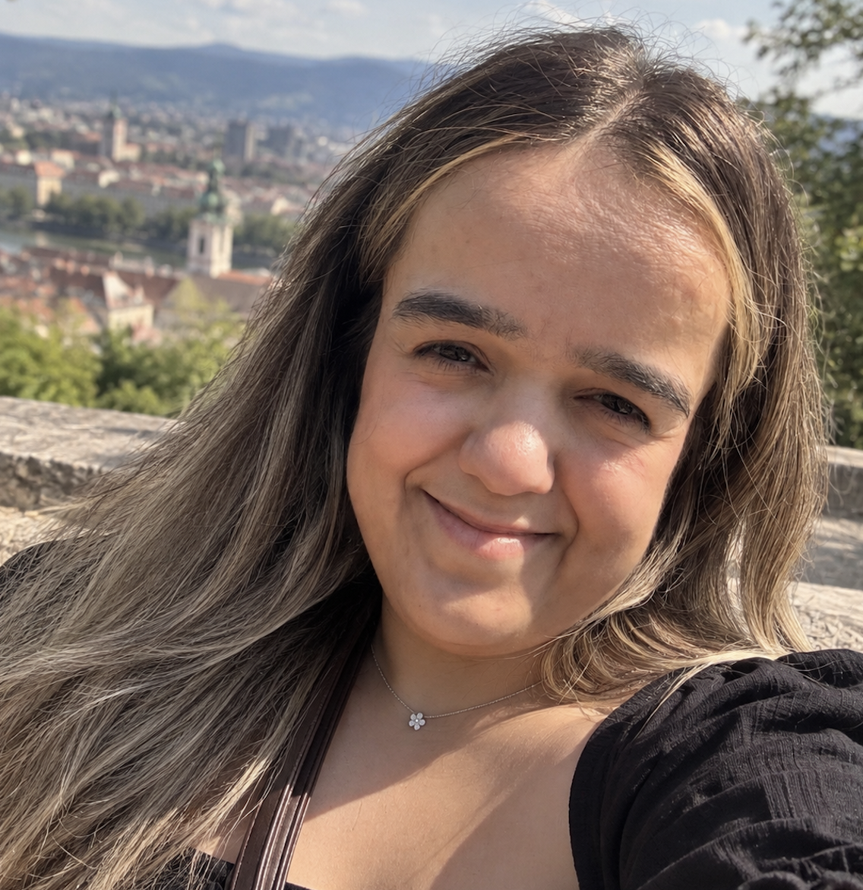

Bio
I'm Sezen Gürakar, a 29-year-old Social Media Manager, based in Graz, Austria. I have a Bachelor's degree in Fine Arts, specializing in Textile Design, and a background in Graphic Design. I'm currently pursuing my Master's degree in Content Strategy and Digital Communication at FH JOANNEUM. I've always been interested in art, design, technology, and different cultures. I also spent over two years studying Korean language and culture in South Korea, which gave me the opportunity to experience a completely different environment. I'm passionate about visual storytelling, digital content creation, and combining creativity with technology. I enjoy learning new things, developing my skills, and exploring different ways to express ideas through design.
Hobbies
- Graphic Design & Digital Illustration
- Nail Art
- Learning Foreign Languages
- Traveling & Exploring Cultures
- Video Editing & Content Creation
- Art & Fashion
- Spending Time with Animals
Work Experience
I have over 2.5 years of professional experience as a Social Media & Content Designer, mainly working with US-based brands in the entertainment and ticketing industry.
My Professional Experience
- Social Media Content Creation: Creating engaging content for Instagram, TikTok, Facebook, and Reddit.
- Graphic Design: Designing promotional graphics, social media posts, advertisements, and digital marketing materials.
- Video Production & Editing: Producing short-form videos, Instagram Reels, and TikTok content for marketing campaigns.
- AI-Powered Content Creation: Using tools such as Sora, Runway, and Google Veo to create innovative video content.
- Digital Marketing: Developing promotional content to increase brand awareness and audience engagement.
- Content Planning: Organizing social media content and adapting creative ideas for different target audiences.
- Brand Communication: Creating content that reflects each brand's visual identity and tone of voice.
- Creative Software: Adobe Photoshop, Illustrator, Premiere Pro, Canva, CapCut, Sora, and Runway.
I have worked on content for brands such as MegaSeats, ScoreBig, and TicketNetwork, focusing on concerts, sports, entertainment, and live events.
My goal is to combine my creative experience with the strategic knowledge I'm gaining through my Master's studies.